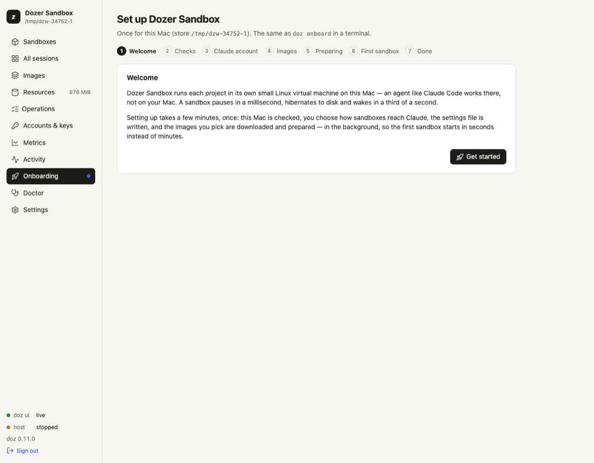

Chapter 1
Getting started
Dozer Sandbox runs AI coding agents, such as Claude Code, in small Linux virtual machines on your Mac.
On this page
Dozer Sandbox runs AI coding agents, such as Claude Code, in small Linux virtual machines on your Mac. Each agent gets its own sandbox: its own disk, a network that only reaches what you allow, and (if you want) one project folder shared in. A sandbox pauses in about a millisecond, sleeps or hibernates to disk, and wakes in about a third of a second with the agent still where you left it.
This page takes you from nothing installed to talking to Claude in a sandbox in about 15 minutes. Most of that is a one-off download that you can leave running in the background.
On this page: What you need · Install · Set up this Mac · Your first project · Talk to your agent · Day to day · When the agent needs a website · Undo · Next steps
What you need#
- A Mac with Apple silicon (M1 or later) running macOS 26 or later.
- About 5 GB of free disk for the first image. Sandboxes share their disks with the image they came from, so each extra sandbox usually adds only megabytes.
- An internet connection for the first setup.
- Optional: Claude Code installed and signed in on your Mac. Your sandboxes can then use that login, with nothing to paste. You can use an API key or a long-lived token instead, or decide later.
Install#
With Homebrew:
brew trust --tap dozer-sandbox/tap # once per Mac: Homebrew loads a third-party tap's formulas only once trusted
brew install dozer-sandbox/tap/doz
doz --versionThe install takes seconds (a prebuilt, signed doz) and ends with a hint: doz onboard. More on installing, upgrading and removing: Installing, upgrading and uninstalling.
Set up this Mac#
Setup happens once per Mac. It checks that your Mac can run sandboxes, connects your Claude account, and prepares the agent's image so your first sandbox starts in seconds. Do it in the terminal or in your browser; both do the same thing.
In the terminal:
doz onboardAt each question the recommended answer is already selected: press Enter to take it.
- Checks. Apple silicon, macOS, the virtualization permission, disk space. A required check that fails stops setup and says why; an optional one (Claude Code not installed, for example) is a warning.
- Your Claude account. If Claude Code is signed in on this Mac, Dozer offers to use that login. Otherwise paste an API key or a
claude setup-tokentoken (it is never echoed), or choose Decide later. - Images. Claude Code is ticked; pi and the plain lab shell are optional. Anything you leave out is prepared the first time you use it.
- Preparing. Dozer downloads the base system and installs the agent and its tools inside a VM. It takes a few minutes. You don't have to wait: press Ctrl-C and it carries on in the background;
doz onboard --statusshows it again. - Stay in touch (optional). Release news, early access and tips and tricks by email — skip it with Enter. See Usage statistics and sign-up.
In your browser:
doz uiThe dashboard opens on the setup wizard: the same steps, and at the end an optional First sandbox and an optional Stay in touch.

Details: Setting up.
What you just set up#
- Each sandbox is a small Linux virtual machine, not a container, with its own kernel and disk. It can't see your Mac's files, apart from the one project folder you share at
/workspace. - The Dozer host runs the sandboxes. It's a background program that starts when you need it and exits when nothing is running.
dozand the dashboard are remote controls for it. - Sandboxes sit behind a network proxy on your Mac. They have no network card of their own: every connection goes through the proxy, which allows only what you permit, and logs it.
- Your credentials never enter a sandbox. The agent sees a stand-in; the proxy adds your real login as each request leaves for Anthropic.
- Two files hold your choices:
~/.config/dozer-sandbox/doz.toml(your settings for this Mac) and a project'sdoz_project.yaml(its sandbox). Everything else is kept by the host.
Usage statistics and sign-up#
Official builds (Homebrew, the release download) send anonymous usage statistics, so we can see what to fix and improve: at most once a day, counts and ranges about how Dozer itself is used — which commands ran and how often they failed (by exit code), which agents, bases and network presets new sandboxes use, the size of your setup as ranges, typical start and wake times rounded to 50 ms, how long sandboxes ran and slept and how long agents worked (as ranges), which features you used (the dashboard, the installed app, doz serve, workspace rules, GitHub access, restore points, templates), which built-in image-preparation step failed, and your Mac's macOS version, chip family, memory and cores as ranges — with a random install id. Never a sandbox, image or project name, a file or folder name or path, anything inside a sandbox, anything you type or a program prints, a command's arguments, a host or website, an account, email or key. Our server adds your country from the connection and does not keep your IP address.
The first time an official build runs it says so in one line. See exactly what would be sent, and turn it off with any one of these:
doz telemetry show # on or off, why, and the exact messages
doz config set telemetry.send_anonymous_usage_stats false # off (or the switch in the dashboard's Settings)
DO_NOT_TRACK=1 doz ls # off whenever DO_NOT_TRACK is set
doz ls --no-send-anonymous-usage-stats # off for one command
doz telemetry reset # a new random install idSigning up is optional: doz signup (or the setup's Stay in touch) asks for an email and what you want — release news, early access, tips and tricks. A confirmation email comes first; every email has a one-click unsubscribe, and your email is never linked to the statistics.
Builds from the open-source repository send nothing. The statistics and sign-up code is part of the official builds only and is not open source; this repository holds the list of what may be sent and every switch. The full policy: dozersandbox.com/privacy.
Your first project#
A sandbox works on one project folder, shared into it at /workspace: the agent's changes appear on your Mac at once, and your editor sees them live.
cd ~/code/my-app
doz initdoz init asks for the sandbox's name (from the folder's) and its image, and writes doz_project.yaml in the folder. It holds no secrets, so you can commit it: anyone who runs doz up in the project gets the same sandbox.
doz upThe first time, this creates the sandbox and starts it in a few seconds (setup prepared the image already). After that, doz up in the folder wakes the same sandbox. Either way it opens the agent in your terminal.
Detach, don't quit. Press Ctrl-] twice to leave the sandbox (once opens a small menu at the bottom:
d detach · n next · p prev · s sessions · Esc back). The agent keeps running, anddoz upbrings you straight back to it.
Your terminal's title shows where you are, for example my-app · claude · 14:05, and goes back to what it was when you detach. Details: Projects and Terminals and sessions.
No project yet?
doz new— or Quick add in the dashboard — makes a sandbox with every default and puts you in it: a free name likeclaude-sandbox, and its own folder in your projects folder (~/dozer-sandbox-workspaces/claude-sandbox). See The quickest way.
Talk to your agent#
You're now in Claude Code, inside the sandbox. Its first-run screens are done and it doesn't stop to ask permission for each command: inside a sandbox, the VM and its network are the boundary. (To have Claude ask first anyway, see claude.permissions in the settings.)
Claude also knows where it runs. Ask it:
where are you running, and where is /workspace on my Mac?
It should tell you it is in a Dozer sandbox (a Linux VM on your Mac), that /workspace is your ~/code/my-app, that its network only reaches what you allow, and that your credentials are added by your Mac and never stored in the sandbox. It learns this from a short note Dozer gives it at every start. See Agents and accounts.
A few things work as you'd hope:
- It can install system packages. The agent has passwordless
sudoinside its sandbox, sosudo apt-get install -y …works (Debian-based images) — and never stops to ask questions. - Its clock is yours. A sandbox follows your Mac's time zone, even after it slept while you travelled.
- Copying works. When Claude copies something, it lands on your Mac's clipboard and a notice says so.
- Browser sign-ins work. If a tool in the sandbox opens a sign-in page, it opens in your Mac's browser, and the login completes. See Signing in from a sandbox.
Day to day#
A sandbox you're not using doesn't have to hold your Mac's memory. Each of these brings the agent back exactly where it was: same conversation, same running programs.
| what happens | memory | back in | |
|---|---|---|---|
doz pause my-app | frozen instantly | kept | ~1 ms |
doz sleep my-app | frozen and saved to disk, so it survives a crash | kept | ~0.3 s |
doz hibernate my-app | saved to disk, and the VM stops | given back to your Mac | ~0.3 s |
doz wake my-app, or simply doz up in the project folder, brings it back. doz ls lists your sandboxes; the dashboard (doz ui) shows the same thing with a live terminal for each.
doz shutdown is a real power-off: running programs end but the disk is kept. doz reset goes back to a fresh copy of the image. Neither touches your project folder or the agent's own settings and history. Details: Sandboxes and their lifecycle.
When the agent needs a website#
A sandbox has no network card of its own. Every connection goes through a proxy on your Mac that checks a short list of permissions and logs the connection. The Standard permissions let a coding agent talk to its AI model, update itself, install system packages and your language's packages, use GitHub and send its own error reports. Anything else is refused and logged.
doz net my-app # what the agent may do, and what it was refused lately
doz net allow my-app install:python # a permission, live
doz net allow my-app site:api.example.com # one siteIn the dashboard, the sandbox's details show What the agent can do as switches, with a one-click suggestion when the agent was refused something. The agent can't change its own permissions; only you can. Details: What the agent can do.
Undo with restore points#
Before letting an agent loose on something risky, take a restore point. It takes milliseconds and uses almost no disk until things change:
doz point take my-app before-refactor
doz point revert my-app before-refactor # go back
doz point fork my-app before-refactor try-2 # or try again in a new sandbox, from the same momentRestore points cover the sandbox's own disk. Your project folder is on your Mac, so use git for that. Details: Restore points, duplicates and templates.
Next steps#
- Something not working?
doz doctor, then Troubleshooting and FAQ. - Let the agent you already use on your Mac drive Dozer: Letting another agent drive Dozer.
- How your Mac is kept safe: Security model.
- Everything else: the manual's index.
Edit this page on GitHub · Chapter 1 of 25